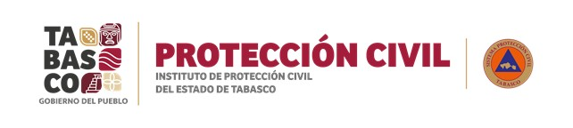
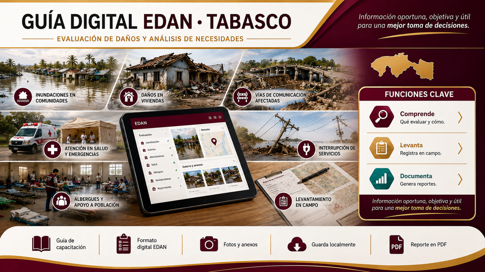

Ruta de capacitación
Aprender EDAN
6 módulos breves con casos, ejercicios y actividades interactivas para comprender el proceso.


Elige la ruta que necesitas: aprender el método mediante módulos breves o iniciar directamente un levantamiento digital con evidencias y reporte.
Elige entre aprender el método o realizar un levantamiento.
6 módulos breves con casos, ejercicios y actividades interactivas para comprender el proceso.
Captura por pasos, ubicación, fotografías, necesidades, guardado local y generación del reporte.
Seis módulos breves para comprender el proceso, practicar decisiones y llegar preparado al levantamiento digital.
Practica el flujo completo antes de realizar un EDAN real.
Captura este caso utilizando los siete pasos del EDAN. La aplicación evaluará la consistencia de tu registro al finalizar.
Formato digital por pasos. Puedes guardar y continuar después.
—Administra tus EDAN y recupera información sin afectar otros expedientes.
Consulta resumida disponible aun sin conexión a internet.
Relación con el EDAN. La Ley establece la Gestión Integral de Riesgos y contempla el análisis y evaluación de los posibles efectos de los fenómenos perturbadores. Durante una emergencia, el auxilio a la población es una función prioritaria y las autoridades deben actuar de manera coordinada, iniciando la ayuda e informando a las instancias especializadas.
Relación con el EDAN. El Reglamento incluye la evaluación de daños entre las medidas que deben ponerse en marcha durante una emergencia. Señala que la intervención institucional para auxiliar a las personas se coordina a partir de una evaluación de daños y necesidades de la población.
También dispone que, para determinar apoyos y donativos, deben considerarse los daños evaluados, las necesidades de las personas damnificadas y los bienes y servicios ya disponibles, con el fin de evitar requerimientos innecesarios.
Relación directa con el EDAN. El Manual establece que los consejos estatales y municipales, con apoyo del centro de operaciones y una vez que existe certeza de que no hay riesgo para el personal, instruyen la evaluación inicial de daños y necesidades dentro de las primeras ocho horas después del impacto, así como evaluaciones complementarias.
La evaluación considera los efectos en la población y su salud, así como el estado de servicios vitales: agua, energía eléctrica, alcantarillado, comunicaciones, transportes y vivienda. La información se integra mediante indicadores básicos útiles para la toma de decisiones.
Relación con el EDAN. La Ley estatal atribuye al Instituto la participación en la evaluación y cuantificación de los daños ocasionados por agentes perturbadores. Asimismo, en situaciones de riesgo inminente, emergencia o desastre, contempla la formulación de una evaluación inicial de la magnitud de la contingencia para informar de inmediato a las instancias del Consejo Estatal.
Relación con el EDAN. La Ley establece para la coordinación municipal de Protección Civil la atribución de formular la evaluación inicial de la magnitud de la contingencia ante alto riesgo, emergencia o desastre, y presentar de inmediato esta información al Presidente Municipal y, en su caso, a las autoridades estatales y federales competentes.
También contempla coordinar acciones de auxilio y recuperación, mantener inventarios de recursos y promover mecanismos de colaboración con otros órdenes de gobierno.
Se almacena únicamente en este dispositivo y precarga futuros EDAN.
Restaurar una revisión no destruye la versión actual.
Restaura elementos o elimínalos definitivamente.
Identificación y control de integridad del expediente.